cbbplotR provides ggplot2 and
gt extensions for visualizing college basketball data in a
simple and intuitive manner. With the package, you can design team logo
plots, conference logo plots, and player headshot plots in a matter of
seconds.
cbbplotR works best with the cbbdata package
– both developed by Andrew
Weatherman – but includes an extensive matching
dictionary that will allow for visualizing data from a variety of
sources. Notably, cbbplotR name matches with:
Barttorvik
KenPom
Synergy (team name, slug, and ID)
Sports Reference (team name and slug)
ESPN (team name, slug, abbreviation, display names, and location names).
Install the package
The easiest way to install cbbplotR is by using the
pak package:
if (!require("pak")) install.packages("pak")
pak::pak("andreweatherman/cbbplotR")Typical use cases
Following this vignette will require installing the
cbbdata package and registering for a free API key:
pak::pak("andreweatherman/cbbdata")
acc_team_data <- cbd_torvik_ratings(year = 2024, conf = 'ACC')
conf_data <- cbd_torvik_conf_factors(year = 2024) %>% slice(1:10)
facet_data <- cbbdata::cbd_torvik_ratings_archive(year = 2024) %>%
summarize(avg_rating = mean(barthag), .by = c(conf, date)) %>%
filter(conf %in% c('ACC', 'B10', 'B12'))Team Logos
Generating logo plots can be achieved by using the
geom_cbb_teams function while specifying an
aes layer that points to the proper team
column in your data. Let’s create a simple logo plot that visualizes
adjusted efficiencies in the ACC.
acc_team_data %>%
ggplot(aes(adj_o, adj_d, team = team)) +
geom_cbb_teams(width = 0.10) +
geom_mean_lines(aes(x0 = adj_o, y0 = adj_d), color = 'black') +
theme_minimal() +
theme(plot.title.position = 'plot',
plot.title = element_text(face = 'bold')) +
labs(title = 'Adjusted Efficiencies in the ACC',
x = 'Adjusted Offense',
y = 'Adjusted Defense')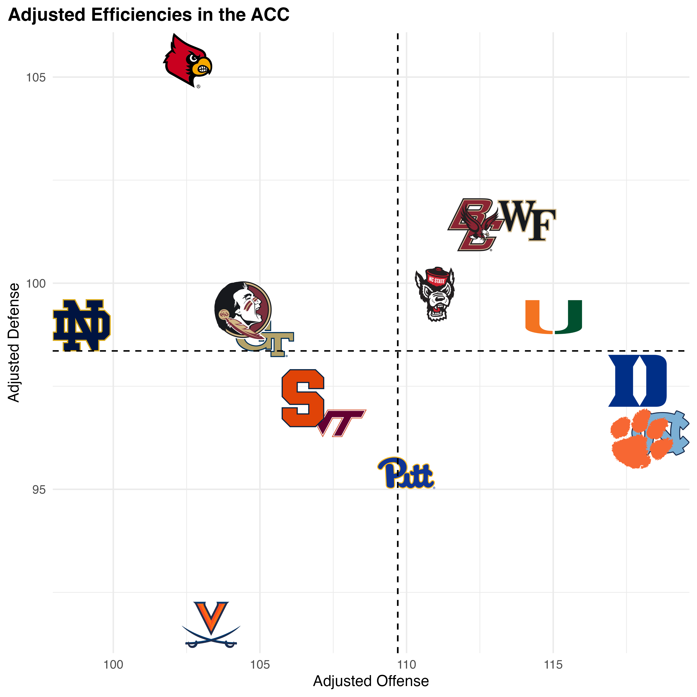
And with just a few functions, we have pulled our data, plotted team
values, drawn conference-average lines, and added labels. It is this
simplicity that makes cbbplotR an invaluable tool for data
analysis in college basketball.
If available, you can plot dark logos by setting
logo_type to “dark.”
acc_team_data %>%
ggplot(aes(adj_o, adj_d, team = team)) +
geom_cbb_teams(width = 0.10, logo_type = "dark") +
geom_mean_lines(aes(x0 = adj_o, y0 = adj_d), color = 'black') +
hrbrthemes::theme_modern_rc() +
theme(plot.title.position = 'plot',
plot.title = element_text(face = 'bold')) +
labs(title = 'Adjusted Efficiencies in the ACC',
x = 'Adjusted Offense',
y = 'Adjusted Defense')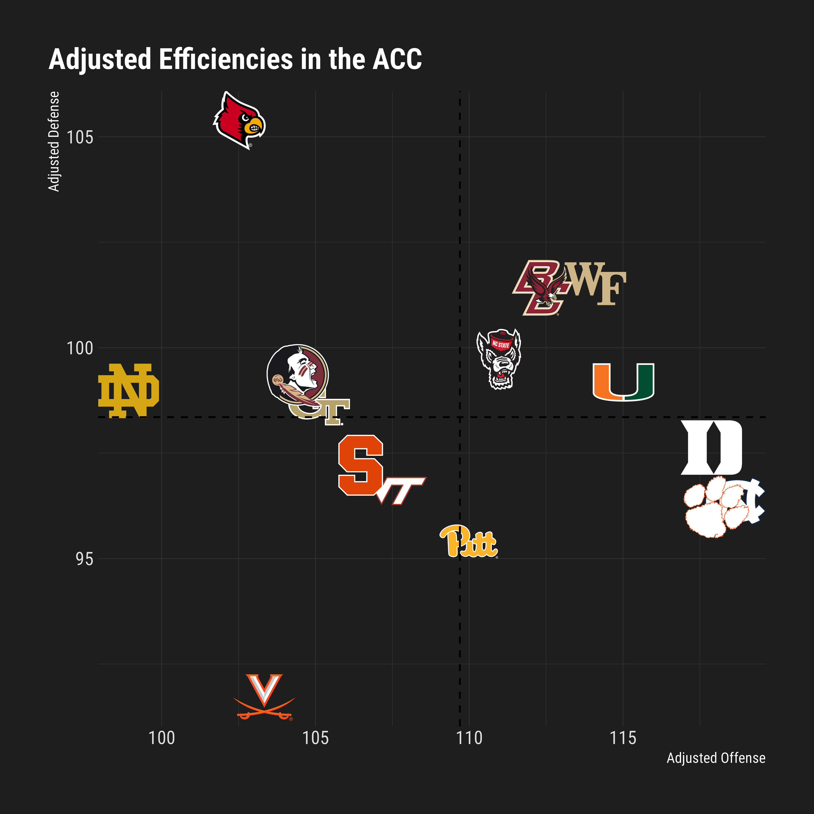
Conference Logos
Using the same process as above, we can quickly create a scatter plot
with conference logos! You can also specify
logo_type = "wordmark" to plot conference wordmarks instead
of logos.
conf_data %>%
ggplot(aes(adj_o, adj_d, conference = conf)) +
geom_cbb_conferences(width = 0.12) +
geom_mean_lines(aes(x0 = adj_o, y0 = adj_d), color = 'black') +
theme_minimal() +
theme(plot.title.position = 'plot',
plot.title = element_text(face = 'bold')) +
labs(title = 'Adjusted Efficiencies Across Top 10 Conferences',
x = 'Adjusted Offense',
y = 'Adjusted Defense')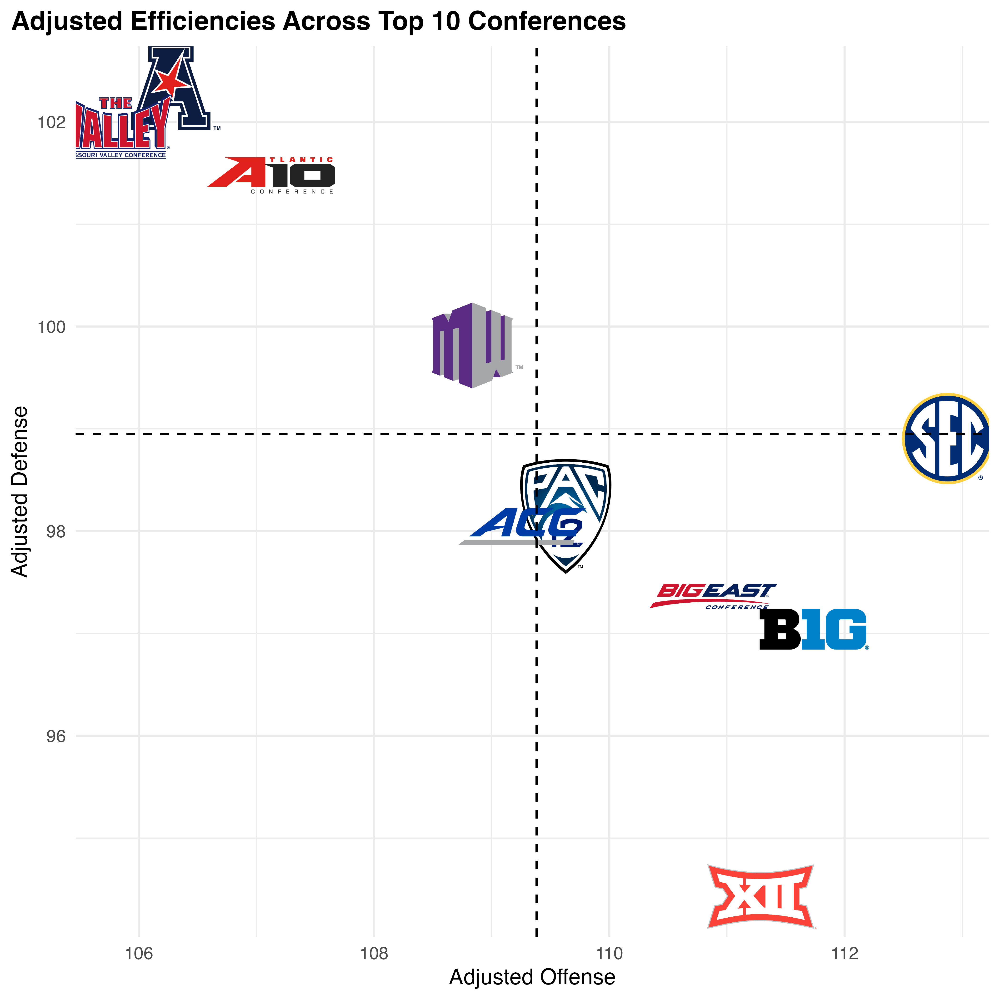
An important caveat: Conferences are weird. Many of the logos are
different dimensions and might require fine-tuning inside your
aes by adjusting the size parameter for
certain ones. cbbplotR does automatically resize a
few conferences, but it might not be sufficient for your needs.
Player Headshots
With cbbplotR, you can also incorporate
player headshots into your visualizations. While cbbplotR
does provide a helper function to retrieve ESPN player IDs,
get_espn_players, there is no guarantee that player names
will match across any other data source – including
cbbdata. There is no support for player name matching.
set.seed(50)
player_ids <- get_espn_players('Duke')
random_data <- tibble(
val1 = rnorm(nrow(player_ids)),
val2 = rnorm(nrow(player_ids)),
id = player_ids$id
)
random_data %>%
ggplot(aes(val1, val2)) +
geom_cbb_headshots(aes(player_id = id, width = 0.1)) +
theme_minimal() +
theme(
plot.title = element_text(face = 'bold', size = 14),
plot.title.position = 'plot'
) +
labs(title = 'Random data to show plotting headshots')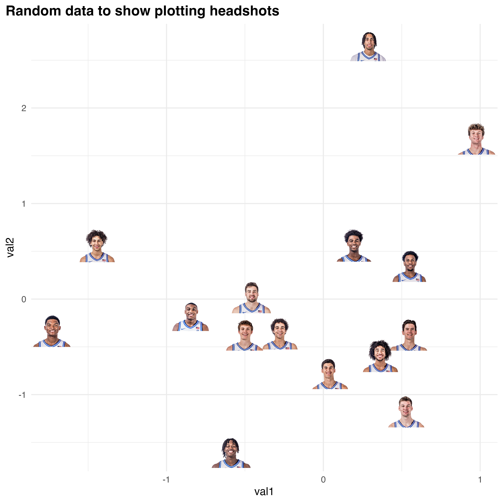
But I have too many teams // want to focus on a select few!
There are a lot of Division 1 basketball teams, and drawing
effective plots with hundreds of logos is challenging. One of the
standout features of cbbplotR is its
ability to highlight specific elements in your plots. This is
particularly useful when dealing with a large number of logos or data
points, but you want to draw attention to only a few key items. You can
apply highlighting to teams, conferences, and players.
Highlighting in cbbplotR is designed to
be both intuitive and flexible. You have several methods at your
disposal:
Transparency Adjustment: By setting a low alpha level for all elements except the ones you wish to highlight, you can subtly bring forward the focus points while keeping the context in the background.
Grayscale Application: Another method involves converting all non-essential logos to grayscale, making the colored logos of your highlighted teams or conferences stand out vividly.
Implementation
Implementing these methods is straightforward. You can adjust your
data manually, providing alphaand/or color
values to certain teams, and pass those values to an aes
layer – or you could let cbbplotR do the heavy lifting.
Without needing to touch your own data, you can pass a vector of teams,
conferences, or player IDs through the highlight_X argument
of geom_cbb_X functions and specify a highlight type –
alpha, color, or both.
For example, let’s assume that we want to highlight the four Tobacco Road teams but still show their position relative to the rest of the ACC.
acc_team_data %>%
ggplot(aes(adj_o, adj_d, team = team)) +
geom_cbb_teams(highlight_teams = c('Duke', 'North Carolina', 'Wake Forest', 'North Carolina St.'), width = 0.08, highlight_method = 'both') +
geom_mean_lines(aes(x0 = adj_o, y0 = adj_d), color = 'black') +
theme_minimal() +
theme(
plot.title = element_text(face = 'bold', size = 14),
plot.title.position = 'plot'
) +
labs(title = 'Adjusted Efficiencies in the ACC (highlight: transparency)',
x = 'Adjusted defense',
y = 'Adjusted offense')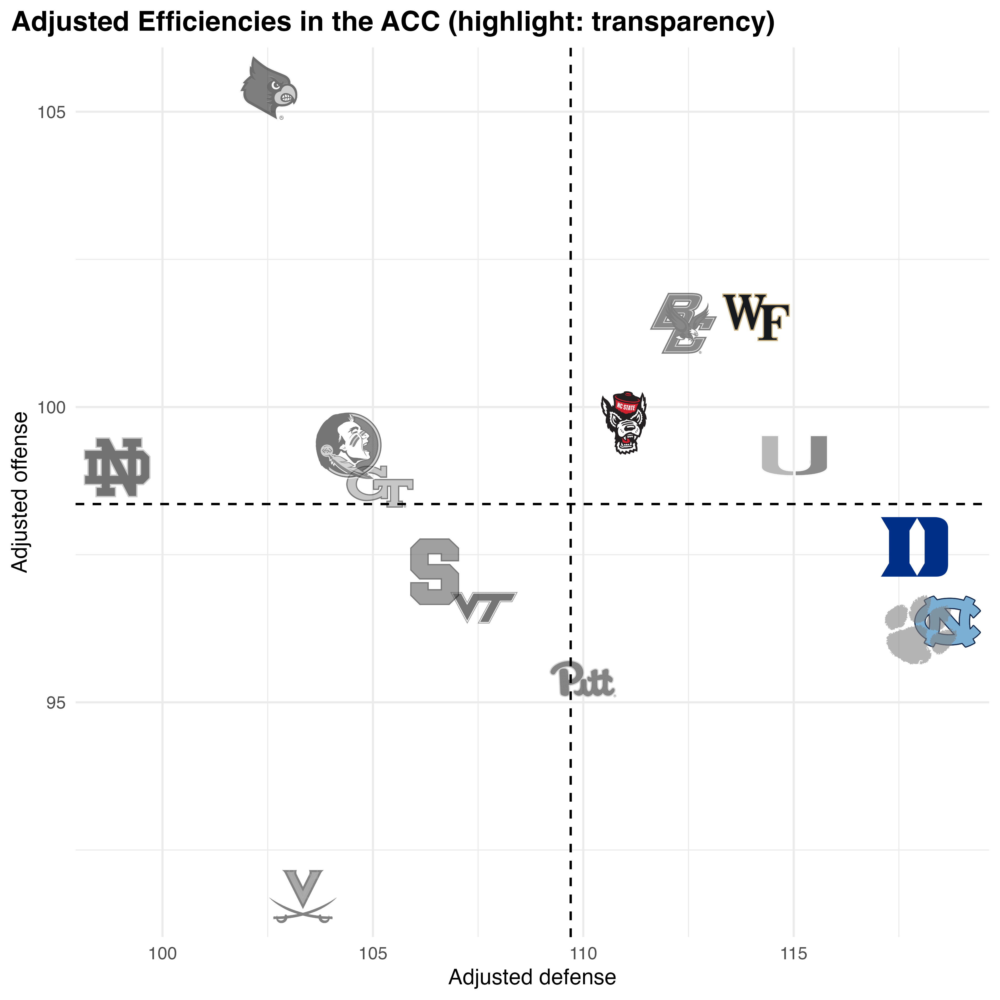
In this example, we chose to highlight our teams by increasing the
transparency and changing logos to grayscale for our
non-selected teams. You can choose to do both,
highlight_method = "both", or just one,
highlight_method = "alpha" //
highlight_method = "color".
The process is analogous for the other geom methods –
but the argument names switch relative to the function
(highlight_conferences and
highlight_players).
Plotting in element_ Areas
cbbplotR extends the standard
capabilities of ggplot2 by allowing you to
place logos and headshots in various parts of your plot, such as in axes
labels or inline with plot titles.
Logos in Axes
With element_cbb_teams,
element_cbb_conferences, and
element_cbb_headshots, you can replace traditional axis
text with logos and headshots. Like with the geom_cbb_X
functions, the element_cbb_X functions are just as
intuitive!
Now, let’s plot adjusted offensive efficiency in the ACC while placing team names on the X-axis.
acc_team_data %>%
ggplot(aes(team, adj_o)) +
geom_col() +
theme_minimal() +
theme(
plot.title = element_text(face = 'bold', size = 14),
plot.title.position = 'plot',
axis.text.x = element_cbb_teams(size = 0.9)
) +
labs(title = 'Adjusted Efficiencies in the ACC',
y = 'Adjusted offense',
x = NULL)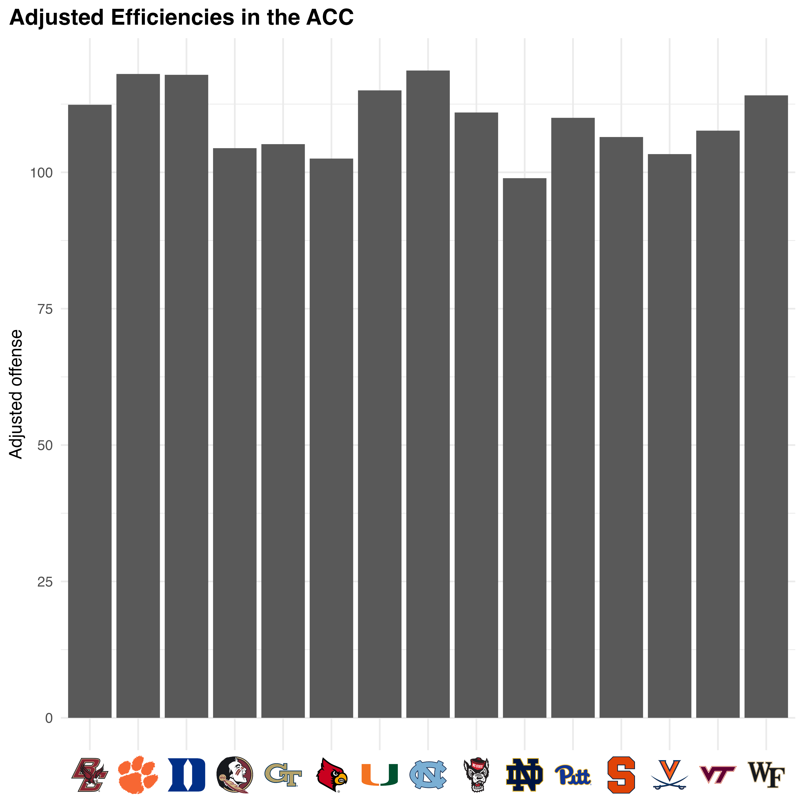
And just like that, we have team logos on our axis! We can similarly
do the same with player headshots and conference logos. For
conference logos, you can similarly plot logos or wordmarks by using the
logo_type argument. Let’s try one example using player
headshots.
set.seed(50)
player_ids <- get_espn_players('Duke')
random_data <- tibble(
val1 = rnorm(nrow(player_ids)),
val2 = rnorm(nrow(player_ids)),
id = player_ids$id
)
random_data %>%
ggplot(aes(id, val2)) +
geom_col() +
theme_minimal() +
theme(
plot.title = element_text(face = 'bold', size = 14),
plot.title.position = 'plot',
axis.text.x = element_cbb_headshots(size = 0.8)
) +
labs(title = 'Random data to show plotting headshots',
x = NULL)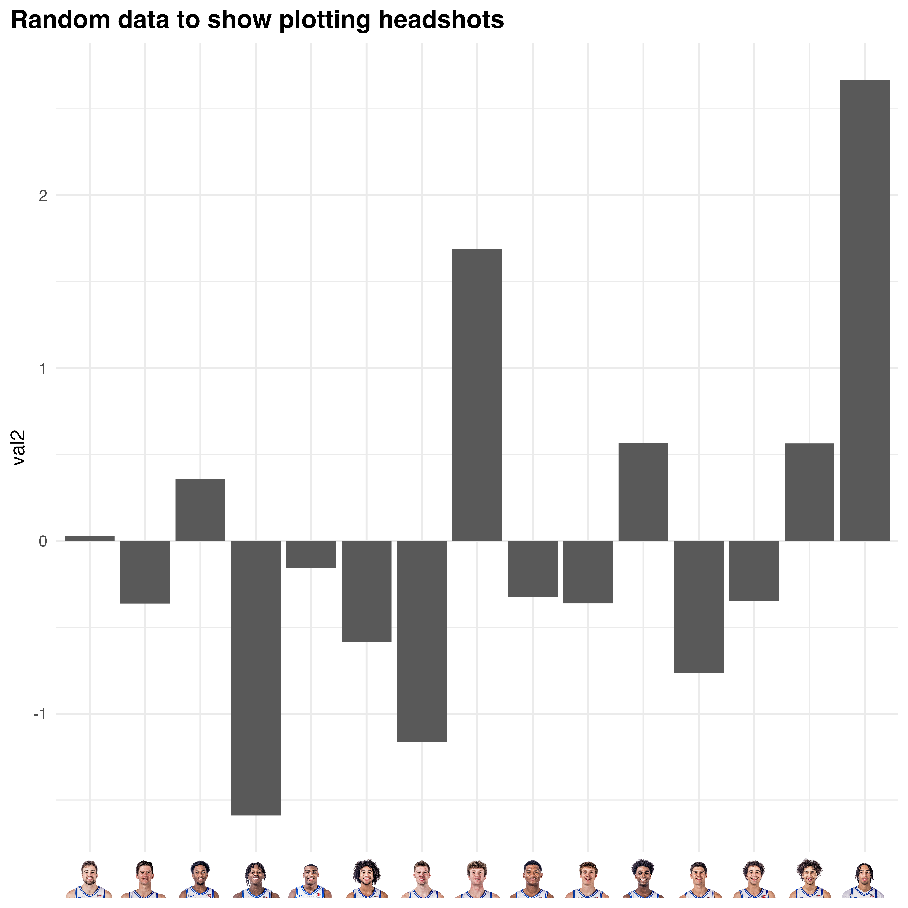
Logos in Facets
The element_cbb_X functions also allow for plotting in
facet titles. This is achieved by using an element function
in conjunction with strip.text.x or
strip.text.y.
facet_data %>%
ggplot(aes(date, avg_rating)) +
geom_line() +
facet_wrap(~conf) +
theme_minimal() +
theme(
plot.title = element_text(face = 'bold', size = 14),
plot.title.position = 'plot',
strip.text.x = element_cbb_conferences(size = 1)
) +
labs(title = 'Average T-Rank Rating for Select Conferences in 2024',
x = 'Date',
y = 'T-Rank Rating')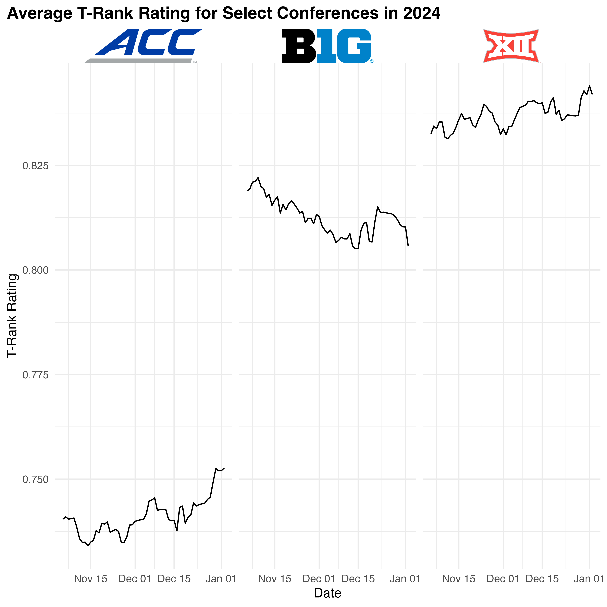
Colors and Fills
cbbplotR provides powerful
functionalities for incorporating team and conference colors into your
ggplot2 visualizations. By using the
scale_color/fill_cbb_X functions, you can
easily map the aesthetic properties of your plots to the official colors
of college basketball teams and conferences.
To make these functions work, simply assign color and/or
fill properties in aes to your team or
conference columns, and then add the appropriate scale function.
Using Scale Functions
The scale_color_cbb_teams and
scale_fill_cbb_teams unctions allow you to assign
team-specific colors to various plot elements. The
scale_color_cbb_conferences
and scale_fill_cbb_conferences functions work in the same
manner and allow you to assign conference-specific color values.
acc_team_data %>%
ggplot(aes(team, adj_o, fill = team)) +
geom_col() +
scale_fill_cbb_teams() +
theme_minimal() +
theme(
plot.title = element_text(face = 'bold', size = 14),
plot.title.position = 'plot',
axis.text.x = element_cbb_teams(size = 0.8)
) +
labs(title = 'Adjusted Efficiencies in the ACC',
y = 'Adjusted offense',
x = NULL)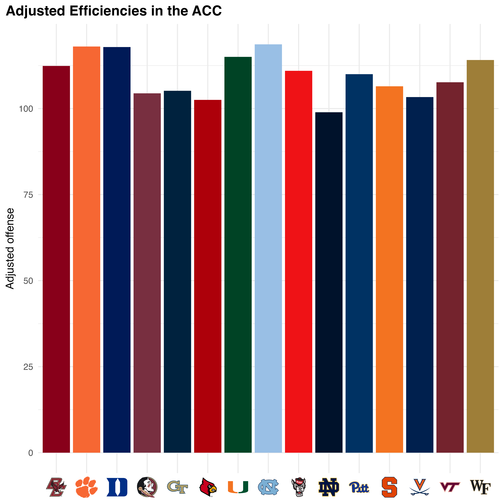
My Plots pane is freezing in RStudio!
If you are plotting numerous team logos, you might notice that
RStudio can be slow to return the plot itself – which can possibly lead
to your R session aborting. To fix this, cbbplotR borrows a
function from the ggpath package called
ggpreview – which saves a temporary image of your plot and
returns it in the Viewer pane. It is recommend to then expand
that window in your browser.
To use ggpreview, you need to store your plot as a
variable and then pass it to the ggpreview function. The
function also takes arguments for plot dimensions.
For example, if we were to draw a plot showing every team’s adjusted
efficiencies, that would require rendering 362 logos, which would
definitely cause us some problems. But with ggpreview, we
can store our plot as a variable and view a temporary image of it! This
entire process takes fewer than 10 seconds.
p <- cbbdata::cbd_torvik_ratings(year = 2024) %>%
ggplot(aes(adj_d, adj_o, team = team)) +
geom_mean_lines(aes(x0 = adj_d, y0 = adj_o), color = 'black') +
geom_cbb_teams(width = 0.03) +
theme_minimal() +
theme(
plot.title = element_text(face = 'bold', size = 14),
plot.title.position = 'plot'
) +
labs(title = 'Adjusted Team Efficiencies',
x = 'Adjusted defense',
y = 'Adjusted offense')
ggpreview(p)gt Utility Functions
cbbplotR ships with a number of utility functions for
use in conjunction with the gt tables package. Notably,
cbbplotR ports over the cbd_gt_logos and
gt_theme_athletic functions from cbbdata – the
former is now called gt_cbb_teams while both are formally
deprecated from the cbbdata package for consistency.
Plotting Logos and Wordmarks
As mentioned, the gt_cbb_teams and
gt_cbb_conferences functions allow for seamless integration
of team and conference logos in table columns. For practicality, only
conference wordmarks are able to be plotted. If you wish to hide names
from the table, you can set the include_names argument to
FALSE.
acc_team_data %>%
slice(1:5) %>%
select(team, barthag, barthag_rk, adj_o, adj_d) %>%
gt_cbb_teams(team, team) %>%
gt() %>%
fmt_markdown(team)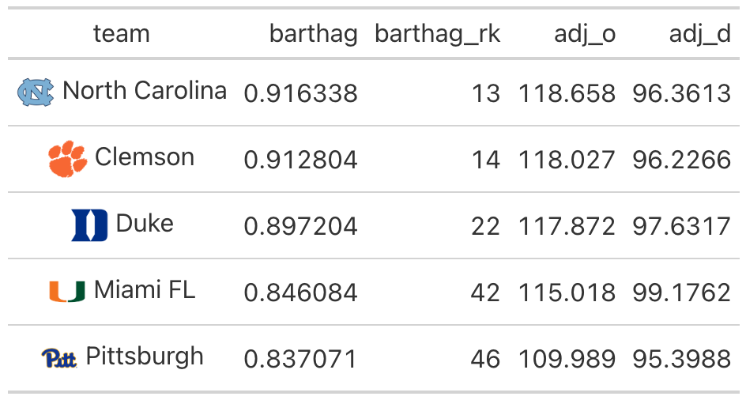
We can do the same thing with conference data too. By default, conference names are excluded from the table.
conf_data %>%
slice(1:5) %>%
select(conf, barthag, adj_o, adj_d, adj_t) %>%
gt_cbb_conferences(conf, conf) %>%
gt() %>%
fmt_markdown(conf)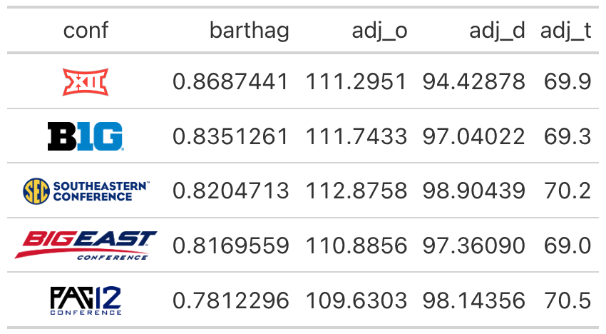
Coloring Rows
cbbplotR includes two helper functions for filling cell
bodies. If you have a win/loss column and wish to fill based on results,
the gt_color_results function is a quick solution. You can
pass through a traditional column with ‘W’ and ‘L’ values, or you can
pass through boolean values and set the result_type
argument to binary. By default, the function expects the
results column to be named result but this can be changed
by using the result_column argument.
df <- data.frame(
result = c(1, 0, 0, 0, 0, 1),
val1 = runif(6)
)
df %>%
gt() %>%
gt_color_results(result_type = 'binary')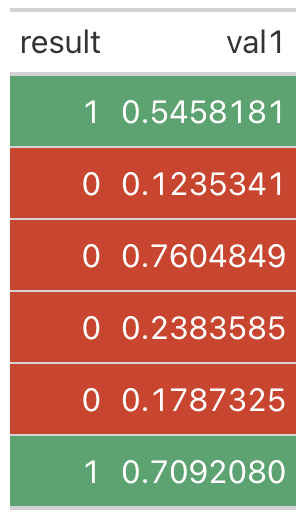
The other utility function is gt_bold_rows. This is a
general catch-all term for a function that allows you to set the
background color and font weight of particular rows. You can either pass
through an empty function, or you can declare some statement that
identifies which rows to alter.
I wrote this function because I often find myself only needing to
bold or highlight certain rows where some condition is true.
For example, let’s bold and highlight only rows where
cyl == 4 in the mtcars data set.
mtcars %>%
slice(1:10) %>%
gt() %>%
gt_bold_rows(filter_statement = "cyl == 4",
highlight_color = 'darkblue',
text_color = 'white')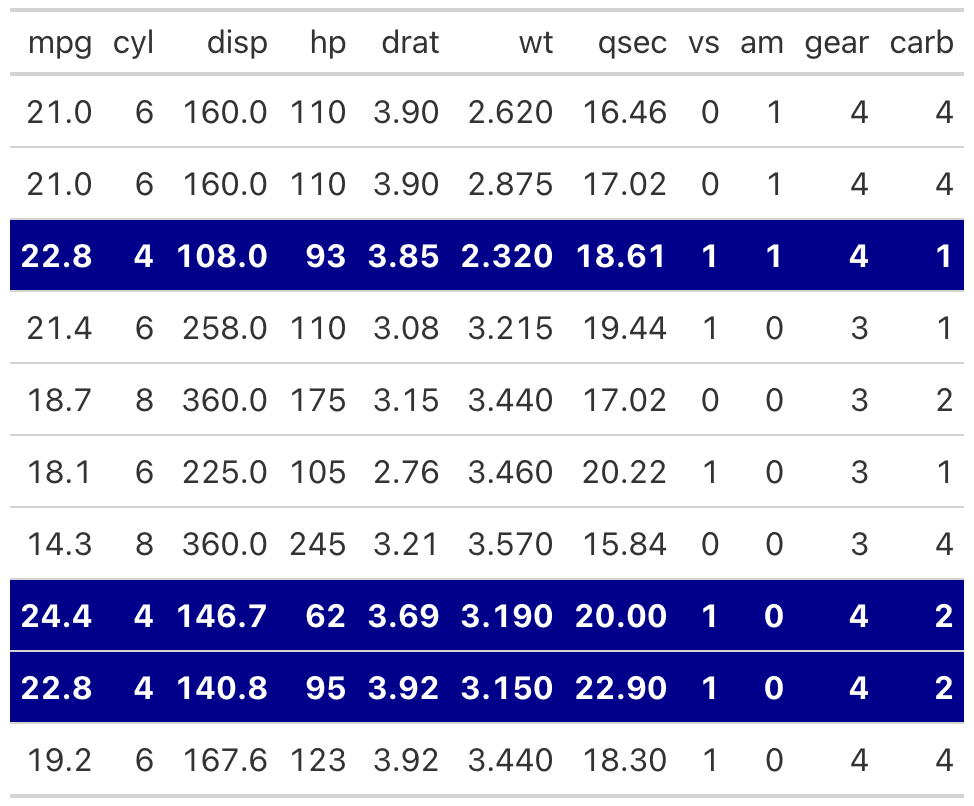
You can further extend this to compound filters. For example, let’s
do the same thing for rows where cyl == 4
and hp > 90. This should highlight two
rows.
mtcars %>%
slice(1:10) %>%
gt() %>%
gt_bold_rows(filter_statement = "cyl == 4 & hp > 90",
highlight_color = 'darkblue',
text_color = 'white')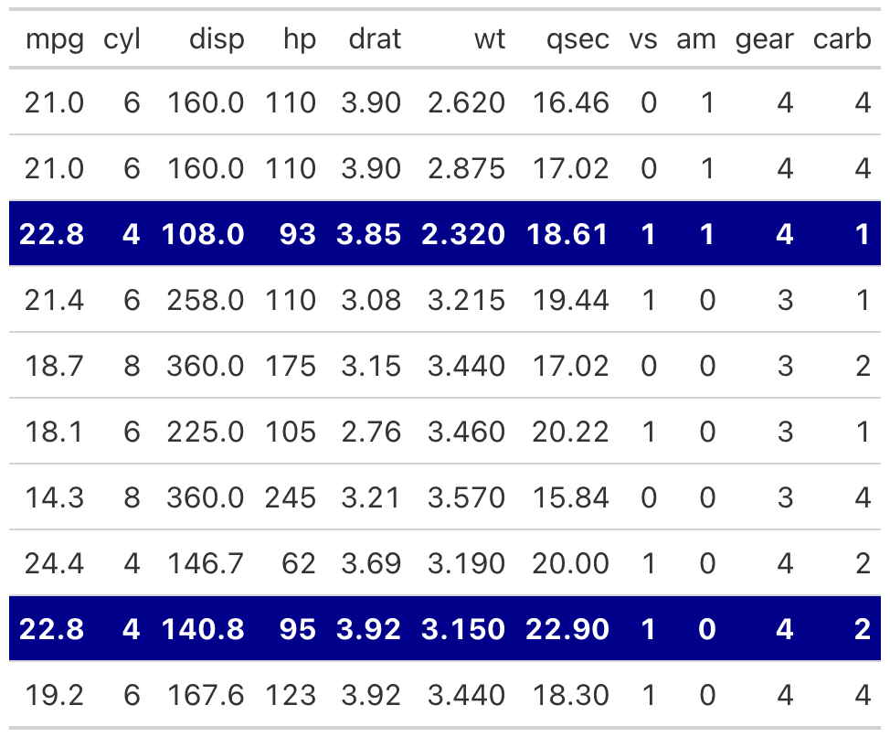
Appearances
cbbplotR ships with three functions that alter the
appearance of gt tables. The first is
gt_cbb_logo_title – a function that neatly adds a
conference logo, team logo, or player headshot in the heading space of
your table.
To work with this function, you will need to declare an optional
title and subtitle and the name of the item to plot. Alternatively, you
can supply a custom link, through logo_link, that will plot
that image. You can adjust various things about the title and subtitle
itself, including the logo_height.
For example, let’s plot the mtcars data set and add
Duke’s logo.
title <- gt_cbb_logo_title(title = 'mtcars data',
subtitle = 'some random subtitle',
type = 'team',
value = 'Duke',
logo_height = 45)
mtcars %>%
slice(1:10) %>%
gt() %>%
tab_header(title = html(title))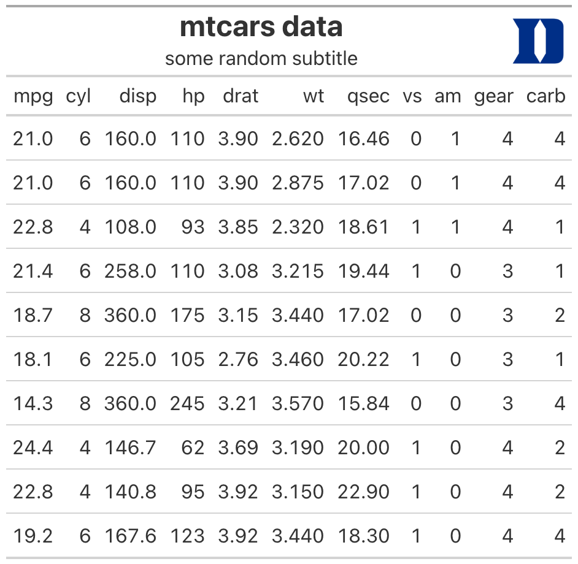
Second, gt_set_fonts is a quick-and-easy solution to
changing the font across all aspects of your gt table. This
is inferior to the fine-tuning allowed by using tab_style
functions but is nice to have for quick tables. By default, the function
will attempt to load the font through Google Fonts. If you would rather
have the font loaded through your system, set
from_google_font to FALSE.
mtcars %>%
slice(1:10) %>%
gt() %>%
gt_set_font('Oswald') %>%
tab_header(title = 'mtcars')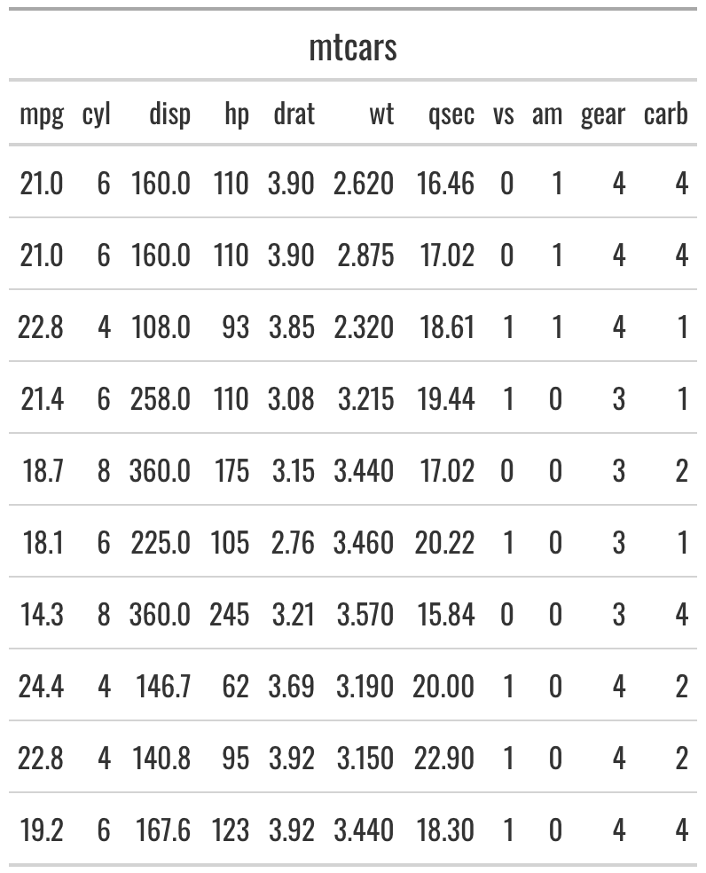
Lastly, cbbplotR includes a nice gt tables
theme that is perfect for box scores or mono-spaced themes. It is
inspired from The Athletic publication.
mtcars %>%
slice(1:10) %>%
gt() %>%
gt_theme_athletic() %>%
tab_header(title = 'mtcars')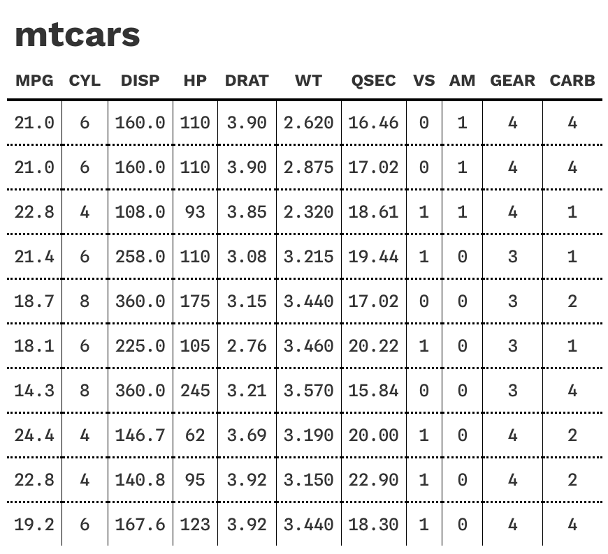
Support
If you have feature recommendations or run into bugs, please open an issue on GitHub. You can also contact me directly on Twitter, but I would prefer the latter.
If you are looking for more college basketball R packages, check out
cbbdata – also developed and maintained by me.